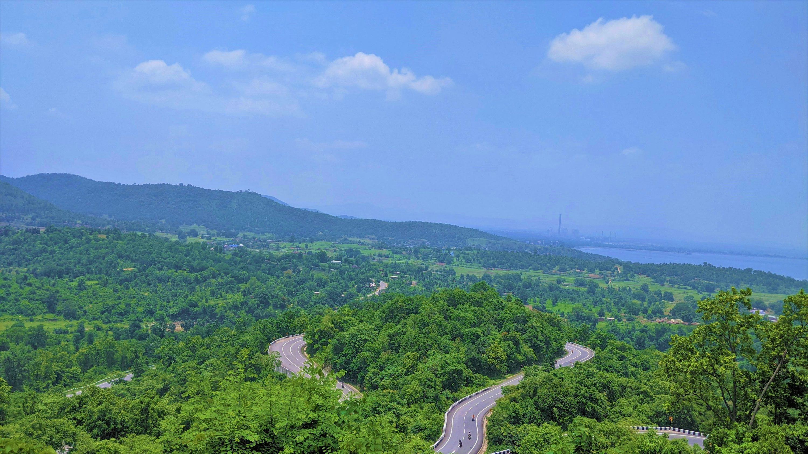

Jharkhand
"A Land of Forests and Minerals"
Quick Facts
Popular Tourist Attractions
Netarhat
Known as the Queen of Chotanagpur, famous for sunrise and sunset views and lush hills.

Dassam Falls
A stunning waterfall near Ranchi, surrounded by rocky terrain and greenery.
Baidyanath Dham
One of the twelve Jyotirlingas, a significant pilgrimage site in Deoghar.
Nature & Wildlife
Jharkhand’s forests are home to Betla National Park, Palamau Tiger Reserve, elephants, tigers, and rich biodiversity.
Famous Personalities
- MS Dhoni: Legendary Indian cricketer from Ranchi.
- Birsa Munda: Tribal freedom fighter and folk hero.
- Arjun Munda: Former CM and tribal leader.
Local Handicrafts
Metal crafts, bamboo and cane items, tribal paintings (Sohrai, Kohvar), and dokra art are key highlights of Jharkhand's artisan culture.
Climate
Jharkhand has a tropical climate with hot summers, pleasant winters, and monsoon rains from June to September.
Culture & Festivals
Folk Dance & Music
Folk dances like Chhau and Santhali reflect tribal stories and daily life.
Festivals
Sarhul, Karma, and Tusu are major tribal festivals celebrating nature and ancestors.
Cuisine
Dishes like Thekua, Dhuska, Chilka Roti, and Handia (local rice beer) are popular.
Clothing
Tribal attire includes colorful sarees, ornaments, and distinctive jewelry styles.
Did You Know? Jharkhand produces over 40% of India’s mineral output and is known as the "Mineral Heart of India".
Note: Information may be subject to updates. Kindly notify us of any discrepancies.